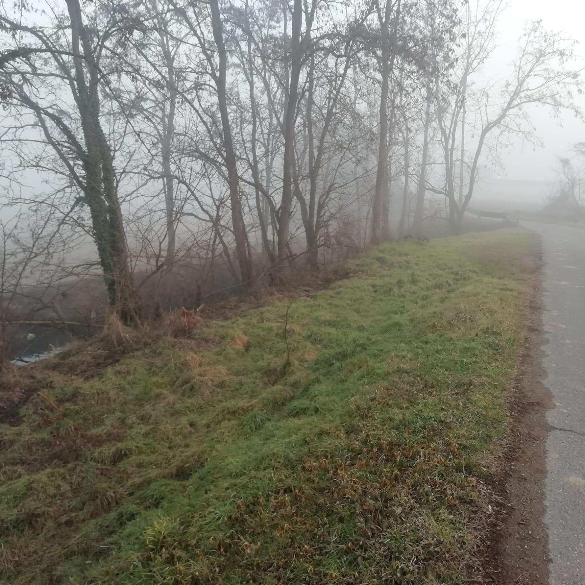
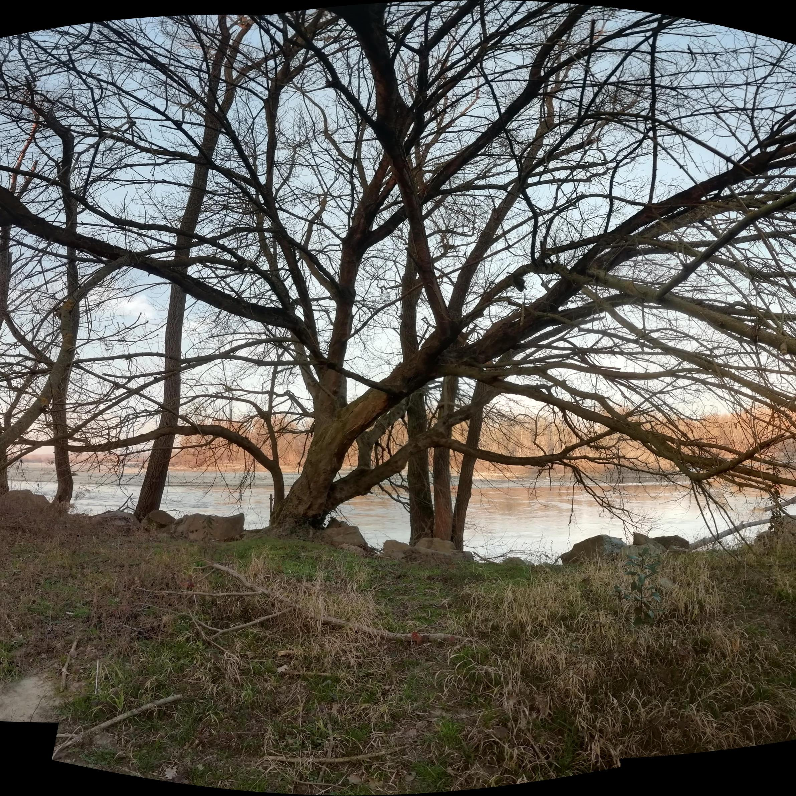
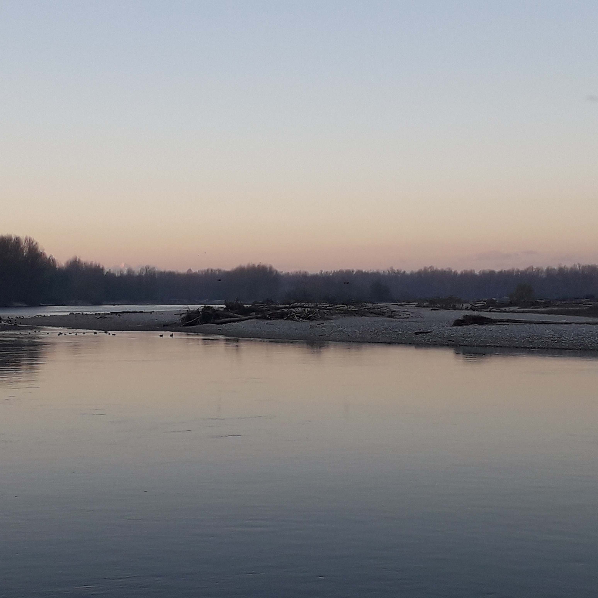
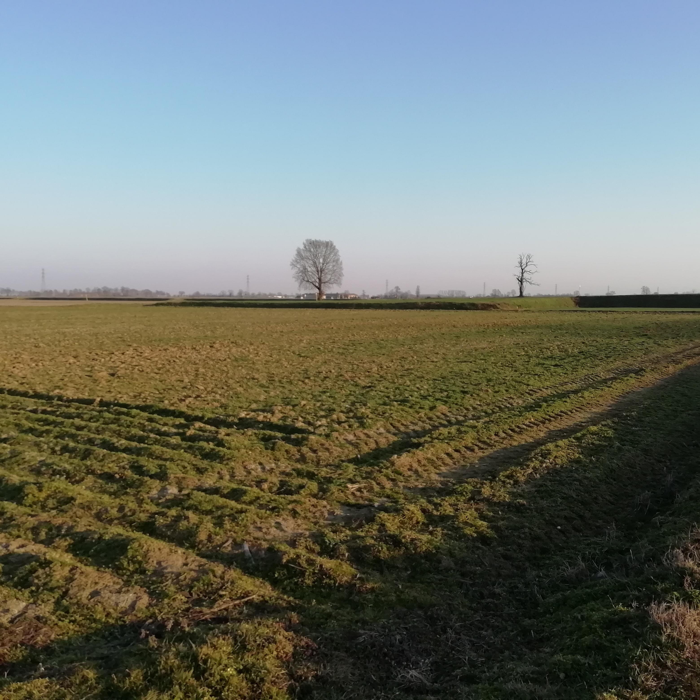
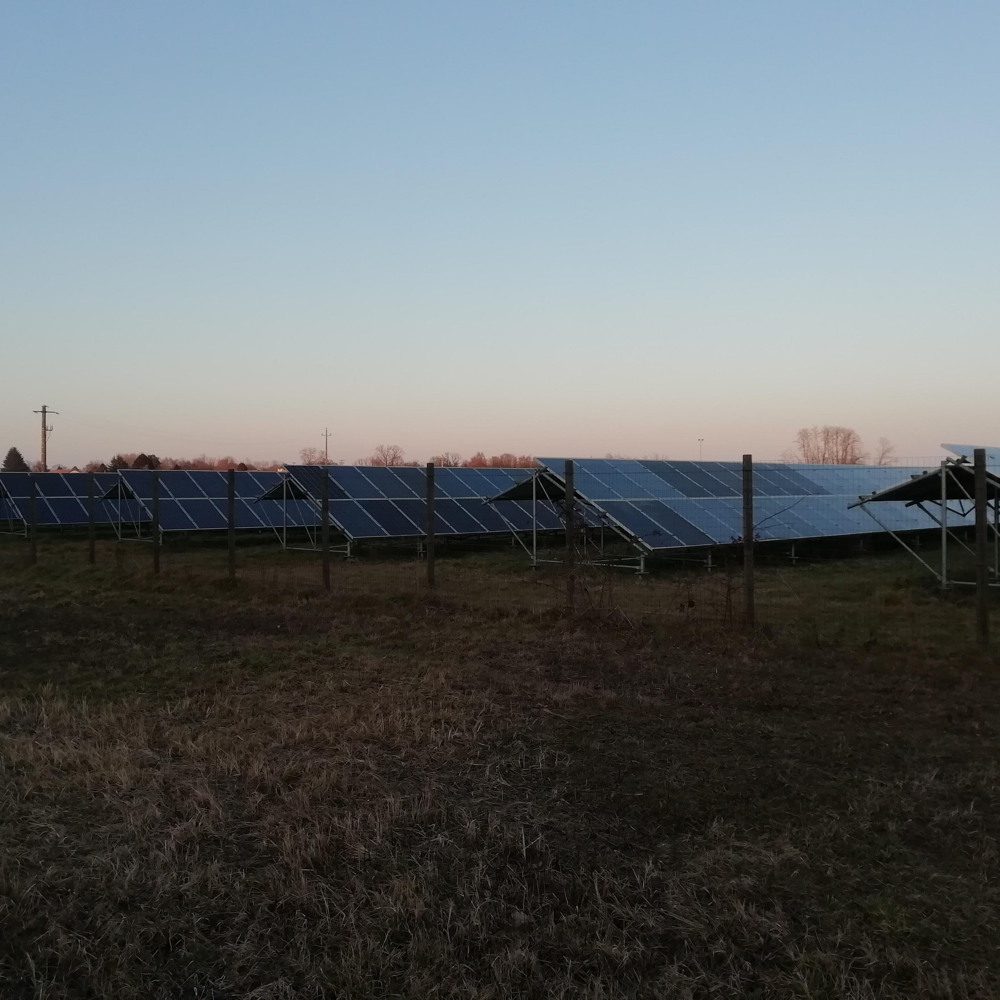
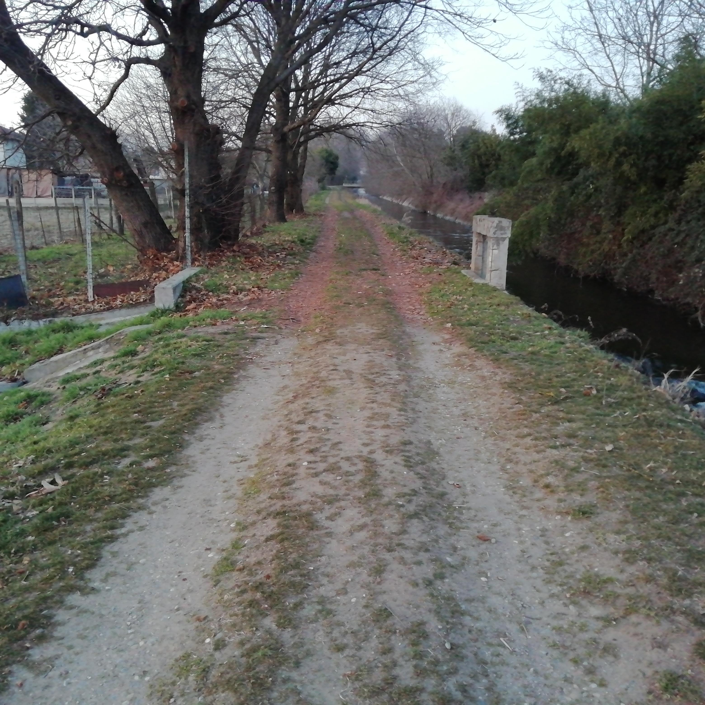

<!DOCTYPE html>
<head>
    <meta http-equiv="content-type" content="text/html; charset=UTF-8" />

        <script>
            L_NO_TOUCH = false;
            L_DISABLE_3D = false;
        </script>

    <style>html, body {width: 100%;height: 100%;margin: 0;padding: 0;}</style>
    <style>#map {position:absolute;top:0;bottom:0;right:0;left:0;}</style>
    <script src="https://cdn.jsdelivr.net/npm/leaflet@1.6.0/dist/leaflet.js"></script>
    <script src="https://code.jquery.com/jquery-1.12.4.min.js"></script>
    <script src="https://maxcdn.bootstrapcdn.com/bootstrap/3.2.0/js/bootstrap.min.js"></script>
    <script src="https://cdnjs.cloudflare.com/ajax/libs/Leaflet.awesome-markers/2.0.2/leaflet.awesome-markers.js"></script>
    <link rel="stylesheet" href="https://cdn.jsdelivr.net/npm/leaflet@1.6.0/dist/leaflet.css"/>
    <link rel="stylesheet" href="https://maxcdn.bootstrapcdn.com/bootstrap/3.2.0/css/bootstrap.min.css"/>
    <link rel="stylesheet" href="https://maxcdn.bootstrapcdn.com/bootstrap/3.2.0/css/bootstrap-theme.min.css"/>
    <link rel="stylesheet" href="https://maxcdn.bootstrapcdn.com/font-awesome/4.6.3/css/font-awesome.min.css"/>
    <link rel="stylesheet" href="https://cdnjs.cloudflare.com/ajax/libs/Leaflet.awesome-markers/2.0.2/leaflet.awesome-markers.css"/>
    <link rel="stylesheet" href="https://cdn.jsdelivr.net/gh/python-visualization/folium/folium/templates/leaflet.awesome.rotate.min.css"/>

            <meta name="viewport" content="width=device-width,
                initial-scale=1.0, maximum-scale=1.0, user-scalable=no" />
            <style>
                #map_a7efa1a6d90f4398b981b53bb21f204b {
                    position: relative;
                    width: 100.0%;
                    height: 100.0%;
                    left: 0.0%;
                    top: 0.0%;
                }
            </style>

</head>
<body>

            <div class="folium-map" id="map_a7efa1a6d90f4398b981b53bb21f204b" ></div>

</body>
<script>

            var map_a7efa1a6d90f4398b981b53bb21f204b = L.map(
                "map_a7efa1a6d90f4398b981b53bb21f204b",
                {
                    center: [45.317245, 8.858102],
                    crs: L.CRS.EPSG3857,
                    maxBounds: [[45.151245, 8.692102], [45.483245, 9.024102000000001]],
                    zoom: 12,
                    zoomControl: false,
                    preferCanvas: false,
                }
            );


            var tile_layer_ef5310975ee64aceaf979b568e5d5236 = L.tileLayer(
                "https://tile.thunderforest.com/landscape/{z}/{x}/{y}.png?apikey=3dc24c77246845e5b1c941baf227ba56",
                {"attribution": "\u0026copy; \u003ca href=\"http://www.thunderforest.com/\"\u003eThunderforest\u003c/a\u003e, \u0026copy; \u003ca href=\"https://www.openstreetmap.org/copyright\"\u003eOpenStreetMap\u003c/a\u003e contributors", "detectRetina": false, "maxNativeZoom": 18, "maxZoom": 18, "minZoom": 12, "noWrap": false, "opacity": 1, "subdomains": "abc", "tms": false}
            ).addTo(map_a7efa1a6d90f4398b981b53bb21f204b);


            var marker_b772fb3a4006484aa40d507d703704ee = L.marker(
                [45.3230625, 8.850245651],
                {}
            ).addTo(map_a7efa1a6d90f4398b981b53bb21f204b);


        var custom_icon_3dd6ef879d614f41bda16c577cb7307b = L.icon({"iconSize": [30, 30], "iconUrl": "https://emojipedia-us.s3.dualstack.us-west-1.amazonaws.com/thumbs/160/microsoft/74/motor-scooter_1f6f5.png "});
        marker_b772fb3a4006484aa40d507d703704ee.setIcon(custom_icon_3dd6ef879d614f41bda16c577cb7307b);


        var popup_991e721b89cf40359bcc3c2460fab228 = L.popup({"maxWidth": "270"});


            var html_53165193d5da40c98bf8834008234f13 = $(`<div id="html_53165193d5da40c98bf8834008234f13" style="width: 100.0%; height: 100.0%;"><h1 style = "font-size: 30px;"><b>Pizzeria</b></h1><br>PLACEHOLDER<br><a href="mailto:info@ecologiaacustica.org?subject=PAESAGGIO SONORO - Pizzeria"><h1 style = "font-size:15px;">💬</h1></a><audio id="audio_GU_VIALE_MONTEGRAPPA_PIZZERIA" loop> <source src="dati/GU_VIALE_MONTEGRAPPA_PIZZERIA/pizzeria.mp3" type="audio/mpeg"> </audio></div>`)[0];
            popup_991e721b89cf40359bcc3c2460fab228.setContent(html_53165193d5da40c98bf8834008234f13);


        marker_b772fb3a4006484aa40d507d703704ee.bindPopup(popup_991e721b89cf40359bcc3c2460fab228)
marker_b772fb3a4006484aa40d507d703704ee.on('click', function (e) {this.openPopup(); document.getElementById('audio_GU_VIALE_MONTEGRAPPA_PIZZERIA').play();});
        ;


            var marker_8aafed9238574b06ab4ef3c69bddcd13 = L.marker(
                [45.31211904, 8.860001045],
                {}
            ).addTo(map_a7efa1a6d90f4398b981b53bb21f204b);


        var custom_icon_885930af7a0f42e896a971d9fcfd86c4 = L.icon({"iconSize": [30, 30], "iconUrl": "https://emojipedia-us.s3.dualstack.us-west-1.amazonaws.com/thumbs/160/microsoft/74/water-wave_1f30a.png "});
        marker_8aafed9238574b06ab4ef3c69bddcd13.setIcon(custom_icon_885930af7a0f42e896a971d9fcfd86c4);


        var popup_afe80b95d81a4e7686418f35f20bb19e = L.popup({"maxWidth": "270"});


            var html_3ff7cc5b65b24020a6da07b5651fd8b3 = $(`<div id="html_3ff7cc5b65b24020a6da07b5651fd8b3" style="width: 100.0%; height: 100.0%;"><h1 style = "font-size: 30px;"><b>Giacchetta Canale</b></h1><br>PLACEHOLDER<br><a href="mailto:info@ecologiaacustica.org?subject=PAESAGGIO SONORO - Giacchetta Canale"><h1 style = "font-size:15px;">💬</h1></a><audio id="audio_GU_GIACCHETTA_CANALE" loop> <source src="dati/GU_GIACCHETTA_CANALE/ZOOM0027.mp3" type="audio/mpeg"> </audio></div>`)[0];
            popup_afe80b95d81a4e7686418f35f20bb19e.setContent(html_3ff7cc5b65b24020a6da07b5651fd8b3);


        marker_8aafed9238574b06ab4ef3c69bddcd13.bindPopup(popup_afe80b95d81a4e7686418f35f20bb19e)
marker_8aafed9238574b06ab4ef3c69bddcd13.on('click', function (e) {this.openPopup(); document.getElementById('audio_GU_GIACCHETTA_CANALE').play();});
        ;


            var marker_fb24052ba9fe4933a135c1be6564d4c1 = L.marker(
                [45.3064081, 8.866924562],
                {}
            ).addTo(map_a7efa1a6d90f4398b981b53bb21f204b);


        var custom_icon_5a85fa2e62754f20b2da33e5b0ee331a = L.icon({"iconSize": [30, 30], "iconUrl": "https://emojipedia-us.s3.dualstack.us-west-1.amazonaws.com/thumbs/60/microsoft/74/umbrella-with-rain-drops_2614.png "});
        marker_fb24052ba9fe4933a135c1be6564d4c1.setIcon(custom_icon_5a85fa2e62754f20b2da33e5b0ee331a);


        var popup_36b1a3c75b354d14929eee27c084d096 = L.popup({"maxWidth": "270"});


            var html_2e8416a150274c83a98a846e24804546 = $(`<div id="html_2e8416a150274c83a98a846e24804546" style="width: 100.0%; height: 100.0%;"><h1 style = "font-size: 30px;"><b>Via de chirico Canale Pioggia</b></h1><br>PLACEHOLDER<br><a href="mailto:info@ecologiaacustica.org?subject=PAESAGGIO SONORO - Via de chirico Canale Pioggia"><h1 style = "font-size:15px;">💬</h1></a><audio id="audio_GU_VIA_DE_CHIRICO_CANALE_v2" loop> <source src="dati/GU_VIA_DE_CHIRICO_CANALE_v2/ZOOM0029.mp3" type="audio/mpeg"> </audio></div>`)[0];
            popup_36b1a3c75b354d14929eee27c084d096.setContent(html_2e8416a150274c83a98a846e24804546);


        marker_fb24052ba9fe4933a135c1be6564d4c1.bindPopup(popup_36b1a3c75b354d14929eee27c084d096)
marker_fb24052ba9fe4933a135c1be6564d4c1.on('click', function (e) {this.openPopup(); document.getElementById('audio_GU_VIA_DE_CHIRICO_CANALE_v2').play();});
        ;


            var marker_76a29ffae1fa49bda9defd0d9c79bdb0 = L.marker(
                [45.30644102, 8.889899845],
                {}
            ).addTo(map_a7efa1a6d90f4398b981b53bb21f204b);


        var custom_icon_22679c7e7ad14f8bb9eb45bca20b36d0 = L.icon({"iconSize": [30, 30], "iconUrl": "https://emojipedia-us.s3.dualstack.us-west-1.amazonaws.com/thumbs/60/microsoft/74/fallen-leaf_1f342.png "});
        marker_76a29ffae1fa49bda9defd0d9c79bdb0.setIcon(custom_icon_22679c7e7ad14f8bb9eb45bca20b36d0);


        var popup_0fcc667c635f43658184576a09a246c2 = L.popup({"maxWidth": "270"});


            var html_435d82264c1c42d3aa8611826114ab82 = $(`<div id="html_435d82264c1c42d3aa8611826114ab82" style="width: 100.0%; height: 100.0%;"><h1 style = "font-size: 30px;"><b>Strada per laghi di santa marta</b></h1><br>PLACEHOLDER<br><a href="mailto:info@ecologiaacustica.org?subject=PAESAGGIO SONORO - Strada per laghi di santa marta"><h1 style = "font-size:15px;">💬</h1></a><audio id="audio_GU_AGRITURISMO_COLDIRETTI" loop> <source src="dati/GU_AGRITURISMO_COLDIRETTI/ZOOM0025.mp3" type="audio/mpeg"> </audio></div>`)[0];
            popup_0fcc667c635f43658184576a09a246c2.setContent(html_435d82264c1c42d3aa8611826114ab82);


        marker_76a29ffae1fa49bda9defd0d9c79bdb0.bindPopup(popup_0fcc667c635f43658184576a09a246c2)
marker_76a29ffae1fa49bda9defd0d9c79bdb0.on('click', function (e) {this.openPopup(); document.getElementById('audio_GU_AGRITURISMO_COLDIRETTI').play();});
        ;


            var marker_6d2a13a9b87149ce83299857a091fbf3 = L.marker(
                [45.29917137, 8.905742693],
                {}
            ).addTo(map_a7efa1a6d90f4398b981b53bb21f204b);


        var custom_icon_37e38fb3c7c24617bc5d80c212cdcd7e = L.icon({"iconSize": [30, 30], "iconUrl": "https://emojipedia-us.s3.dualstack.us-west-1.amazonaws.com/thumbs/160/microsoft/74/bird_1f426.png "});
        marker_6d2a13a9b87149ce83299857a091fbf3.setIcon(custom_icon_37e38fb3c7c24617bc5d80c212cdcd7e);


        var popup_f811afca3f9a4b3b83859e4e7226bead = L.popup({"maxWidth": "270"});


            var html_c5250aaf3b454249a820a0526f163a48 = $(`<div id="html_c5250aaf3b454249a820a0526f163a48" style="width: 100.0%; height: 100.0%;"><h1 style = "font-size: 30px;"><b>Laghetto dei piccoli</b></h1><br>PLACEHOLDER<br><a href="mailto:info@ecologiaacustica.org?subject=PAESAGGIO SONORO - Laghetto dei piccoli"><h1 style = "font-size:15px;">💬</h1></a><audio id="audio_GU_LAGHETTO_DEI_PICCOLI" loop> <source src="dati/GU_LAGHETTO_DEI_PICCOLI/ZOOM0033.mp3" type="audio/mpeg"> </audio></div>`)[0];
            popup_f811afca3f9a4b3b83859e4e7226bead.setContent(html_c5250aaf3b454249a820a0526f163a48);


        marker_6d2a13a9b87149ce83299857a091fbf3.bindPopup(popup_f811afca3f9a4b3b83859e4e7226bead)
marker_6d2a13a9b87149ce83299857a091fbf3.on('click', function (e) {this.openPopup(); document.getElementById('audio_GU_LAGHETTO_DEI_PICCOLI').play();});
        ;


            var marker_9e774c23c6e34eb5bb2fa07752224520 = L.marker(
                [45.31246512, 8.883821165],
                {}
            ).addTo(map_a7efa1a6d90f4398b981b53bb21f204b);


        var custom_icon_369292466a6c4a9e9127db435d39362a = L.icon({"iconSize": [30, 30], "iconUrl": "https://emojipedia-us.s3.dualstack.us-west-1.amazonaws.com/thumbs/60/microsoft/74/cat_1f408.png "});
        marker_9e774c23c6e34eb5bb2fa07752224520.setIcon(custom_icon_369292466a6c4a9e9127db435d39362a);


        var popup_6d54a450525340cab0da66952e1ace7e = L.popup({"maxWidth": "270"});


            var html_aeda43bcaab148409a2bdfe308adce62 = $(`<div id="html_aeda43bcaab148409a2bdfe308adce62" style="width: 100.0%; height: 100.0%;"><h1 style = "font-size: 30px;"><b>Miciopolis</b></h1><br>PLACEHOLDER<br><a href="mailto:info@ecologiaacustica.org?subject=PAESAGGIO SONORO - Miciopolis"><h1 style = "font-size:15px;">💬</h1></a><audio id="audio_GU_MICIOPOLIS" loop> <source src="dati/GU_MICIOPOLIS/ZOOM0022.mp3" type="audio/mpeg"> </audio></div>`)[0];
            popup_6d54a450525340cab0da66952e1ace7e.setContent(html_aeda43bcaab148409a2bdfe308adce62);


        marker_9e774c23c6e34eb5bb2fa07752224520.bindPopup(popup_6d54a450525340cab0da66952e1ace7e)
marker_9e774c23c6e34eb5bb2fa07752224520.on('click', function (e) {this.openPopup(); document.getElementById('audio_GU_MICIOPOLIS').play();});
        ;


            var marker_7b8c99225cad4ef08cbf530c350d7914 = L.marker(
                [45.30433837, 8.883231356],
                {}
            ).addTo(map_a7efa1a6d90f4398b981b53bb21f204b);


        var custom_icon_5633b48fc76b40759ac07e541b5a5388 = L.icon({"iconSize": [30, 30], "iconUrl": "https://emojipedia-us.s3.dualstack.us-west-1.amazonaws.com/thumbs/160/microsoft/74/water-wave_1f30a.png "});
        marker_7b8c99225cad4ef08cbf530c350d7914.setIcon(custom_icon_5633b48fc76b40759ac07e541b5a5388);


        var popup_0c25ea3f326b494b94f3fc288db593e0 = L.popup({"maxWidth": "270"});


            var html_4e862f0f4e6045ffbc15bb4ab57db4ec = $(`<div id="html_4e862f0f4e6045ffbc15bb4ab57db4ec" style="width: 100.0%; height: 100.0%;"><h1 style = "font-size: 30px;"><b>Strada per la Sforzesca</b></h1><br><br>PLACEHOLDER<br><a href="mailto:info@ecologiaacustica.org?subject=PAESAGGIO SONORO - Strada per la Sforzesca"><h1 style = "font-size:15px;">💬</h1></a><audio id="audio_GU_STRADA_REBUFFI" loop> <source src="dati/GU_STRADA_REBUFFI/ZOOM0024.mp3" type="audio/mpeg"> </audio></div>`)[0];
            popup_0c25ea3f326b494b94f3fc288db593e0.setContent(html_4e862f0f4e6045ffbc15bb4ab57db4ec);


        marker_7b8c99225cad4ef08cbf530c350d7914.bindPopup(popup_0c25ea3f326b494b94f3fc288db593e0)
marker_7b8c99225cad4ef08cbf530c350d7914.on('click', function (e) {this.openPopup(); document.getElementById('audio_GU_STRADA_REBUFFI').play();});
        ;


            var marker_f8ac83827b27442f8dd4dbf76cbac0a2 = L.marker(
                [45.29236968, 8.884778005],
                {}
            ).addTo(map_a7efa1a6d90f4398b981b53bb21f204b);


        var custom_icon_7db383a18d2f434f8c601036d3183099 = L.icon({"iconSize": [30, 30], "iconUrl": "https://emojipedia-us.s3.dualstack.us-west-1.amazonaws.com/thumbs/60/microsoft/74/fog_1f32b.png "});
        marker_f8ac83827b27442f8dd4dbf76cbac0a2.setIcon(custom_icon_7db383a18d2f434f8c601036d3183099);


        var popup_6df2f68a54b54a598ba2129c769c410b = L.popup({"maxWidth": "270"});


            var html_57fb64ae0266400d9ec87b944135a6ca = $(`<div id="html_57fb64ae0266400d9ec87b944135a6ca" style="width: 100.0%; height: 100.0%;"><h1 style = "font-size: 30px;"><b>Cimitero musicale</b></h1><br><br>Mi ringrazia. Provo a suonare live sotto il suo suggerimento insieme ad altri amici.<br />Non sapendo suonare mi concentro timidamente sul Re. Rinuncio e chiudo il piano.<br />Il sottofondo è musica ambient e sono attorniato dal mio datore di lavoro.<br><a href="mailto:info@ecologiaacustica.org?subject=PAESAGGIO SONORO - Cimitero musicale"><h1 style = "font-size:15px;">💬</h1></a><audio id="audio_GU_STRADA_REBUFFI_v3" loop> <source src="dati/GU_STRADA_REBUFFI_v3/ZOOM0028.mp3" type="audio/mpeg"> </audio></div>`)[0];
            popup_6df2f68a54b54a598ba2129c769c410b.setContent(html_57fb64ae0266400d9ec87b944135a6ca);


        marker_f8ac83827b27442f8dd4dbf76cbac0a2.bindPopup(popup_6df2f68a54b54a598ba2129c769c410b)
marker_f8ac83827b27442f8dd4dbf76cbac0a2.on('click', function (e) {this.openPopup(); document.getElementById('audio_GU_STRADA_REBUFFI_v3').play();});
        ;


            var marker_62e35c67ae8e4c1b84cbf923503e5f5a = L.marker(
                [45.34084406, 8.867725439],
                {}
            ).addTo(map_a7efa1a6d90f4398b981b53bb21f204b);


        var custom_icon_f86b6b3ca7644c41b2d96b7fca7d993a = L.icon({"iconSize": [30, 30], "iconUrl": "https://emojipedia-us.s3.dualstack.us-west-1.amazonaws.com/thumbs/60/microsoft/74/speaker-with-three-sound-waves_1f50a.png "});
        marker_62e35c67ae8e4c1b84cbf923503e5f5a.setIcon(custom_icon_f86b6b3ca7644c41b2d96b7fca7d993a);


        var popup_722706873cc2483592f8ae40acebd88e = L.popup({"maxWidth": "270"});


            var html_7acef2b6c3dd48cf99c0f223215cd9ae = $(`<div id="html_7acef2b6c3dd48cf99c0f223215cd9ae" style="width: 100.0%; height: 100.0%;"><h1 style = "font-size: 30px;"><b>Rave a Ticino</b></h1><br><br>PLACEHOLDER<br><a href="mailto:info@ecologiaacustica.org?subject=PAESAGGIO SONORO - Rave a Ticino"><h1 style = "font-size:15px;">💬</h1></a><audio id="audio_GU_RAVE_TISIN_v1" loop> <source src="dati/GU_RAVE_TISIN_v1/ZOOM0025.mp3" type="audio/mpeg"> </audio></div>`)[0];
            popup_722706873cc2483592f8ae40acebd88e.setContent(html_7acef2b6c3dd48cf99c0f223215cd9ae);


        marker_62e35c67ae8e4c1b84cbf923503e5f5a.bindPopup(popup_722706873cc2483592f8ae40acebd88e)
marker_62e35c67ae8e4c1b84cbf923503e5f5a.on('click', function (e) {this.openPopup(); document.getElementById('audio_GU_RAVE_TISIN_v1').play();});
        ;


            var marker_7de72718058d4d12a6444d39022f3631 = L.marker(
                [45.34220987, 8.865593442],
                {}
            ).addTo(map_a7efa1a6d90f4398b981b53bb21f204b);


        var custom_icon_a0a03a5a45c44d9d919b30888b57ccd8 = L.icon({"iconSize": [30, 30], "iconUrl": "https://emojipedia-us.s3.dualstack.us-west-1.amazonaws.com/thumbs/160/microsoft/74/water-wave_1f30a.png "});
        marker_7de72718058d4d12a6444d39022f3631.setIcon(custom_icon_a0a03a5a45c44d9d919b30888b57ccd8);


        var popup_303b5ad128714c6f95608edc0ee28263 = L.popup({"maxWidth": "270"});


            var html_4141c748b08a4ad7baedbee02fcc94a0 = $(`<div id="html_4141c748b08a4ad7baedbee02fcc94a0" style="width: 100.0%; height: 100.0%;"><h1 style = "font-size: 30px;"><b>Acqua dolce e cassa dritta</b></h1><br><br>PLACEHOLDER<br><a href="mailto:info@ecologiaacustica.org?subject=PAESAGGIO SONORO - Acqua dolce e cassa dritta"><h1 style = "font-size:15px;">💬</h1></a><audio id="audio_GU_RAVE_TISIN_v3" loop> <source src="dati/GU_RAVE_TISIN_v3/ZOOM0028.mp3" type="audio/mpeg"> </audio></div>`)[0];
            popup_303b5ad128714c6f95608edc0ee28263.setContent(html_4141c748b08a4ad7baedbee02fcc94a0);


        marker_7de72718058d4d12a6444d39022f3631.bindPopup(popup_303b5ad128714c6f95608edc0ee28263)
marker_7de72718058d4d12a6444d39022f3631.on('click', function (e) {this.openPopup(); document.getElementById('audio_GU_RAVE_TISIN_v3').play();});
        ;


            var marker_771b2f8416164cae84d7a65b81f66260 = L.marker(
                [45.34300948, 8.862928168],
                {}
            ).addTo(map_a7efa1a6d90f4398b981b53bb21f204b);


        var custom_icon_a10c07f4ea164b2080d3fa4440a16cea = L.icon({"iconSize": [30, 30], "iconUrl": "https://emojipedia-us.s3.dualstack.us-west-1.amazonaws.com/thumbs/160/microsoft/74/bird_1f426.png "});
        marker_771b2f8416164cae84d7a65b81f66260.setIcon(custom_icon_a10c07f4ea164b2080d3fa4440a16cea);


        var popup_63c6092e6e2640ecac230527966a3d70 = L.popup({"maxWidth": "270"});


            var html_af0cfdb9990b4c47bbc154e1636757d4 = $(`<div id="html_af0cfdb9990b4c47bbc154e1636757d4" style="width: 100.0%; height: 100.0%;"><h1 style = "font-size: 30px;"><b>Birds of Rocca Petrella</b></h1><br><br>Qua si sente bene<br /><br />Avrei voluto scendere ma non era possibile a causa di una stramaledetta proprietà privata<br /><br />Tantè<br><a href="mailto:info@ecologiaacustica.org?subject=PAESAGGIO SONORO - Birds of Rocca Petrella"><h1 style = "font-size:15px;">💬</h1></a><audio id="audio_GU_ROCCA_PETRELLA" loop> <source src="dati/GU_ROCCA_PETRELLA/ZOOM0033.mp3" type="audio/mpeg"> </audio></div>`)[0];
            popup_63c6092e6e2640ecac230527966a3d70.setContent(html_af0cfdb9990b4c47bbc154e1636757d4);


        marker_771b2f8416164cae84d7a65b81f66260.bindPopup(popup_63c6092e6e2640ecac230527966a3d70)
marker_771b2f8416164cae84d7a65b81f66260.on('click', function (e) {this.openPopup(); document.getElementById('audio_GU_ROCCA_PETRELLA').play();});
        ;


            var marker_77d16b6128074240a6c54a6632d7d31c = L.marker(
                [45.33842032, 8.87050925],
                {}
            ).addTo(map_a7efa1a6d90f4398b981b53bb21f204b);


        var custom_icon_ed21b3db42c94f23bef7747aa22f5132 = L.icon({"iconSize": [30, 30], "iconUrl": "https://emojipedia-us.s3.dualstack.us-west-1.amazonaws.com/thumbs/60/microsoft/309/person-biking_1f6b4.png "});
        marker_77d16b6128074240a6c54a6632d7d31c.setIcon(custom_icon_ed21b3db42c94f23bef7747aa22f5132);


        var popup_a536a83d35ec4d388b10ce9902a49c36 = L.popup({"maxWidth": "270"});


            var html_cf9a4dad602d45e6a3f8a8397c4c7fc8 = $(`<div id="html_cf9a4dad602d45e6a3f8a8397c4c7fc8" style="width: 100.0%; height: 100.0%;"><h1 style = "font-size: 30px;"><b>UFO e ciclismo</b></h1><br>PLACEHOLDER<br><a href="mailto:info@ecologiaacustica.org?subject=PAESAGGIO SONORO - UFO e ciclismo"><h1 style = "font-size:15px;">💬</h1></a><audio id="audio_GU_CENTRALE_ENEL_v2" loop> <source src="dati/GU_CENTRALE_ENEL_v2/ZOOM0037.mp3" type="audio/mpeg"> </audio></div>`)[0];
            popup_a536a83d35ec4d388b10ce9902a49c36.setContent(html_cf9a4dad602d45e6a3f8a8397c4c7fc8);


        marker_77d16b6128074240a6c54a6632d7d31c.bindPopup(popup_a536a83d35ec4d388b10ce9902a49c36)
marker_77d16b6128074240a6c54a6632d7d31c.on('click', function (e) {this.openPopup(); document.getElementById('audio_GU_CENTRALE_ENEL_v2').play();});
        ;


            var marker_a7d22be228fc4620971c4401a74db790 = L.marker(
                [45.34069404, 8.878451395],
                {}
            ).addTo(map_a7efa1a6d90f4398b981b53bb21f204b);


        var custom_icon_fb37b311e052475c89ca703439994597 = L.icon({"iconSize": [30, 30], "iconUrl": "https://emojipedia-us.s3.dualstack.us-west-1.amazonaws.com/thumbs/160/microsoft/74/water-wave_1f30a.png "});
        marker_a7d22be228fc4620971c4401a74db790.setIcon(custom_icon_fb37b311e052475c89ca703439994597);


        var popup_95b0ad8c25804880b3d6c62dfddc580b = L.popup({"maxWidth": "270"});


            var html_a00f184b51e84102b774453b9d0dfe9c = $(`<div id="html_a00f184b51e84102b774453b9d0dfe9c" style="width: 100.0%; height: 100.0%;"><h1 style = "font-size: 30px;"><b>Fiume azzurro</b></h1><br>PLACEHOLDER<br><a href="mailto:info@ecologiaacustica.org?subject=PAESAGGIO SONORO - Fiume azzurro"><h1 style = "font-size:15px;">💬</h1></a><audio id="audio_GU_TICINO_v3" loop> <source src="dati/GU_TICINO_v3/ZOOM0026.mp3" type="audio/mpeg"> </audio></div>`)[0];
            popup_95b0ad8c25804880b3d6c62dfddc580b.setContent(html_a00f184b51e84102b774453b9d0dfe9c);


        marker_a7d22be228fc4620971c4401a74db790.bindPopup(popup_95b0ad8c25804880b3d6c62dfddc580b)
marker_a7d22be228fc4620971c4401a74db790.on('click', function (e) {this.openPopup(); document.getElementById('audio_GU_TICINO_v3').play();});
        ;


            var marker_0b759c8516a64e92be6908fecc73e794 = L.marker(
                [45.33987551, 8.88500919],
                {}
            ).addTo(map_a7efa1a6d90f4398b981b53bb21f204b);


        var custom_icon_60f0993418d34649a151e14d194079a3 = L.icon({"iconSize": [30, 30], "iconUrl": "https://emojipedia-us.s3.dualstack.us-west-1.amazonaws.com/thumbs/160/microsoft/153/swan_1f9a2.png "});
        marker_0b759c8516a64e92be6908fecc73e794.setIcon(custom_icon_60f0993418d34649a151e14d194079a3);


        var popup_b764da2e7ec84616a8a49a8517d830b0 = L.popup({"maxWidth": "270"});


            var html_df2d372c3525485087936e7e37626c02 = $(`<div id="html_df2d372c3525485087936e7e37626c02" style="width: 100.0%; height: 100.0%;"><h1 style = "font-size: 30px;"><b>Cigni fx</b></h1><br>PLACEHOLDER<br><a href="mailto:info@ecologiaacustica.org?subject=PAESAGGIO SONORO - Cigni fx"><h1 style = "font-size:15px;">💬</h1></a><audio id="audio_GU_TICINO_v4" loop> <source src="dati/GU_TICINO_v4/ZOOM0027.mp3" type="audio/mpeg"> </audio></div>`)[0];
            popup_b764da2e7ec84616a8a49a8517d830b0.setContent(html_df2d372c3525485087936e7e37626c02);


        marker_0b759c8516a64e92be6908fecc73e794.bindPopup(popup_b764da2e7ec84616a8a49a8517d830b0)
marker_0b759c8516a64e92be6908fecc73e794.on('click', function (e) {this.openPopup(); document.getElementById('audio_GU_TICINO_v4').play();});
        ;


            var marker_e452a483d24b424893d1c29fe76a0340 = L.marker(
                [45.33114616, 8.861188604],
                {}
            ).addTo(map_a7efa1a6d90f4398b981b53bb21f204b);


        var custom_icon_1b2d872701714542aa5fa4244baa3725 = L.icon({"iconSize": [30, 30], "iconUrl": "https://emojipedia-us.s3.dualstack.us-west-1.amazonaws.com/thumbs/60/microsoft/74/pistol_1f52b.png "});
        marker_e452a483d24b424893d1c29fe76a0340.setIcon(custom_icon_1b2d872701714542aa5fa4244baa3725);


        var popup_bbf6e0c419e04642af1ee5025dfbc234 = L.popup({"maxWidth": "270"});


            var html_594620833af64ef5b6110a24fc80b2fe = $(`<div id="html_594620833af64ef5b6110a24fc80b2fe" style="width: 100.0%; height: 100.0%;"><h1 style = "font-size: 30px;"><b>Cani e bang bang</b></h1><br>PLACEHOLDER<br><a href="mailto:info@ecologiaacustica.org?subject=PAESAGGIO SONORO - Cani e bang bang"><h1 style = "font-size:15px;">💬</h1></a><audio id="audio_GU_POLIGONO" loop> <source src="dati/GU_POLIGONO/ZOOM0031.mp3" type="audio/mpeg"> </audio></div>`)[0];
            popup_bbf6e0c419e04642af1ee5025dfbc234.setContent(html_594620833af64ef5b6110a24fc80b2fe);


        marker_e452a483d24b424893d1c29fe76a0340.bindPopup(popup_bbf6e0c419e04642af1ee5025dfbc234)
marker_e452a483d24b424893d1c29fe76a0340.on('click', function (e) {this.openPopup(); document.getElementById('audio_GU_POLIGONO').play();});
        ;


            var marker_ad4e2234b19341b4886c8c85881d42ec = L.marker(
                [45.33321272, 8.860613964],
                {}
            ).addTo(map_a7efa1a6d90f4398b981b53bb21f204b);


        var custom_icon_c1d15feb2f1649ab9d564b457a09b91f = L.icon({"iconSize": [30, 30], "iconUrl": "https://emojipedia-us.s3.dualstack.us-west-1.amazonaws.com/thumbs/60/microsoft/74/bell_1f514.png "});
        marker_ad4e2234b19341b4886c8c85881d42ec.setIcon(custom_icon_c1d15feb2f1649ab9d564b457a09b91f);


        var popup_331b7e06e9034b3d918cf42c3e1e7337 = L.popup({"maxWidth": "270"});


            var html_a0da969a25884a4bb1a788005108357b = $(`<div id="html_a0da969a25884a4bb1a788005108357b" style="width: 100.0%; height: 100.0%;"><h1 style = "font-size: 30px;"><b>Campane</b></h1><br>PLACEHOLDER<br><a href="mailto:info@ecologiaacustica.org?subject=PAESAGGIO SONORO - Campane"><h1 style = "font-size:15px;">💬</h1></a><audio id="audio_GU_STRADA_MORABASSA" loop> <source src="dati/GU_STRADA_MORABASSA/ZOOM0032.mp3" type="audio/mpeg"> </audio></div>`)[0];
            popup_331b7e06e9034b3d918cf42c3e1e7337.setContent(html_a0da969a25884a4bb1a788005108357b);


        marker_ad4e2234b19341b4886c8c85881d42ec.bindPopup(popup_331b7e06e9034b3d918cf42c3e1e7337)
marker_ad4e2234b19341b4886c8c85881d42ec.on('click', function (e) {this.openPopup(); document.getElementById('audio_GU_STRADA_MORABASSA').play();});
        ;


            var marker_1d4a812e47ff480085197d7253dd3259 = L.marker(
                [45.3200354, 8.855686002],
                {}
            ).addTo(map_a7efa1a6d90f4398b981b53bb21f204b);


        var custom_icon_9bc9b91a64124373b9b2c1e811ffa1bb = L.icon({"iconSize": [30, 30], "iconUrl": "https://emojipedia-us.s3.dualstack.us-west-1.amazonaws.com/thumbs/60/microsoft/74/automobile_1f697.png "});
        marker_1d4a812e47ff480085197d7253dd3259.setIcon(custom_icon_9bc9b91a64124373b9b2c1e811ffa1bb);


        var popup_bcd8297fdaf04dd9a60b39e4052ca571 = L.popup({"maxWidth": "270"});


            var html_db95cd40d5944f58ac2f44152056d52a = $(`<div id="html_db95cd40d5944f58ac2f44152056d52a" style="width: 100.0%; height: 100.0%;"><h1 style = "font-size: 30px;"><b>Pavè</b></h1><br>PLACEHOLDER<br><a href="mailto:info@ecologiaacustica.org?subject=PAESAGGIO SONORO - Pavè"><h1 style = "font-size:15px;">💬</h1></a><audio id="audio_GU_MADONNA_7_DOLORI" loop> <source src="dati/GU_MADONNA_7_DOLORI/ZOOM0023.mp3" type="audio/mpeg"> </audio></div>`)[0];
            popup_bcd8297fdaf04dd9a60b39e4052ca571.setContent(html_db95cd40d5944f58ac2f44152056d52a);


        marker_1d4a812e47ff480085197d7253dd3259.bindPopup(popup_bcd8297fdaf04dd9a60b39e4052ca571)
marker_1d4a812e47ff480085197d7253dd3259.on('click', function (e) {this.openPopup(); document.getElementById('audio_GU_MADONNA_7_DOLORI').play();});
        ;


            var marker_d878263da8424937a9864bfadc8ca581 = L.marker(
                [45.316389, 8.856819],
                {}
            ).addTo(map_a7efa1a6d90f4398b981b53bb21f204b);


        var custom_icon_71c78eb619144f8a90a0a754e1909e19 = L.icon({"iconSize": [30, 30], "iconUrl": "https://emojipedia-us.s3.dualstack.us-west-1.amazonaws.com/thumbs/60/microsoft/74/speaking-head-in-silhouette_1f5e3.png "});
        marker_d878263da8424937a9864bfadc8ca581.setIcon(custom_icon_71c78eb619144f8a90a0a754e1909e19);


        var popup_d94af1ac49474288beb8b4679371aca4 = L.popup({"maxWidth": "270"});


            var html_0698484f10704243921e546444e53edd = $(`<div id="html_0698484f10704243921e546444e53edd" style="width: 100.0%; height: 100.0%;"><h1 style = "font-size: 30px;"><b>Castello alle 18</b></h1><br>PLACEHOLDER<br><a href="mailto:info@ecologiaacustica.org?subject=PAESAGGIO SONORO - Castello alle 18"><h1 style = "font-size:15px;">💬</h1></a><audio id="audio_AN_CASTELLO_ORE_18" loop> <source src="dati/AN_CASTELLO_ORE_18/castello ore 18.mp3" type="audio/mpeg"> </audio></div>`)[0];
            popup_d94af1ac49474288beb8b4679371aca4.setContent(html_0698484f10704243921e546444e53edd);


        marker_d878263da8424937a9864bfadc8ca581.bindPopup(popup_d94af1ac49474288beb8b4679371aca4)
marker_d878263da8424937a9864bfadc8ca581.on('click', function (e) {this.openPopup(); document.getElementById('audio_AN_CASTELLO_ORE_18').play();});
        ;


            var marker_91ff0cb5770b4a1a8be14fb860fa25fb = L.marker(
                [45.315783, 8.856105],
                {}
            ).addTo(map_a7efa1a6d90f4398b981b53bb21f204b);


        var custom_icon_3b511782f6ec4f9c8a82e3c0b9a4fef7 = L.icon({"iconSize": [30, 30], "iconUrl": "https://emojipedia-us.s3.dualstack.us-west-1.amazonaws.com/thumbs/60/microsoft/74/speaking-head-in-silhouette_1f5e3.png "});
        marker_91ff0cb5770b4a1a8be14fb860fa25fb.setIcon(custom_icon_3b511782f6ec4f9c8a82e3c0b9a4fef7);


        var popup_5195b4c4c7ad44b8a4712fbddea7959e = L.popup({"maxWidth": "270"});


            var html_8091731b5351423bb9d720a57b63f59e = $(`<div id="html_8091731b5351423bb9d720a57b63f59e" style="width: 100.0%; height: 100.0%;"><h1 style = "font-size: 30px;"><b>Portone</b></h1><br>PLACEHOLDER<br><a href="mailto:info@ecologiaacustica.org?subject=PAESAGGIO SONORO - Portone"><h1 style = "font-size:15px;">💬</h1></a><audio id="audio_AN_PORTONE" loop> <source src="dati/AN_PORTONE/portone.mp3" type="audio/mpeg"> </audio></div>`)[0];
            popup_5195b4c4c7ad44b8a4712fbddea7959e.setContent(html_8091731b5351423bb9d720a57b63f59e);


        marker_91ff0cb5770b4a1a8be14fb860fa25fb.bindPopup(popup_5195b4c4c7ad44b8a4712fbddea7959e)
marker_91ff0cb5770b4a1a8be14fb860fa25fb.on('click', function (e) {this.openPopup(); document.getElementById('audio_AN_PORTONE').play();});
        ;


            var marker_f4df59609c5d45449c7853597088d4fb = L.marker(
                [45.314307, 8.854067],
                {}
            ).addTo(map_a7efa1a6d90f4398b981b53bb21f204b);


        var custom_icon_6ee4fcaaf45d4749985678105e982727 = L.icon({"iconSize": [30, 30], "iconUrl": "https://emojipedia-us.s3.dualstack.us-west-1.amazonaws.com/thumbs/160/microsoft/74/water-wave_1f30a.png "});
        marker_f4df59609c5d45449c7853597088d4fb.setIcon(custom_icon_6ee4fcaaf45d4749985678105e982727);


        var popup_0252c26d56d942f3993462315dd2dd56 = L.popup({"maxWidth": "270"});


            var html_f66964cda20448cc909f326d12f206f3 = $(`<div id="html_f66964cda20448cc909f326d12f206f3" style="width: 100.0%; height: 100.0%;"><h1 style = "font-size: 30px;"><b>Via Mulini</b></h1><br>PLACEHOLDER<br><a href="mailto:info@ecologiaacustica.org?subject=PAESAGGIO SONORO - Via Mulini"><h1 style = "font-size:15px;">💬</h1></a><audio id="audio_AN_VIA_MULINI" loop> <source src="dati/AN_VIA_MULINI/via mulini acqua.mp3" type="audio/mpeg"> </audio></div>`)[0];
            popup_0252c26d56d942f3993462315dd2dd56.setContent(html_f66964cda20448cc909f326d12f206f3);


        marker_f4df59609c5d45449c7853597088d4fb.bindPopup(popup_0252c26d56d942f3993462315dd2dd56)
marker_f4df59609c5d45449c7853597088d4fb.on('click', function (e) {this.openPopup(); document.getElementById('audio_AN_VIA_MULINI').play();});
        ;


            var marker_528906c5bbd248be950a3ebc4574fda1 = L.marker(
                [45.314712, 8.850959],
                {}
            ).addTo(map_a7efa1a6d90f4398b981b53bb21f204b);


        var custom_icon_e17c3396b7d74580bc4a9ba6915de251 = L.icon({"iconSize": [30, 30], "iconUrl": "https://emojipedia-us.s3.dualstack.us-west-1.amazonaws.com/thumbs/60/microsoft/74/automobile_1f697.png "});
        marker_528906c5bbd248be950a3ebc4574fda1.setIcon(custom_icon_e17c3396b7d74580bc4a9ba6915de251);


        var popup_4cc5120f5bd246ef967b097ee6556a0e = L.popup({"maxWidth": "270"});


            var html_410b92e7afe94a00a9de2a5bb54254a4 = $(`<div id="html_410b92e7afe94a00a9de2a5bb54254a4" style="width: 100.0%; height: 100.0%;"><h1 style = "font-size: 30px;"><b>Traffico di Corso Torino</b></h1><br>PLACEHOLDER<br><a href="mailto:info@ecologiaacustica.org?subject=PAESAGGIO SONORO - Traffico di Corso Torino"><h1 style = "font-size:15px;">💬</h1></a><audio id="audio_AL_CORSO_TORINO_TRAFFICO" loop> <source src="dati/AL_CORSO_TORINO_TRAFFICO/corso torino 9 traffico.mp3" type="audio/mpeg"> </audio></div>`)[0];
            popup_4cc5120f5bd246ef967b097ee6556a0e.setContent(html_410b92e7afe94a00a9de2a5bb54254a4);


        marker_528906c5bbd248be950a3ebc4574fda1.bindPopup(popup_4cc5120f5bd246ef967b097ee6556a0e)
marker_528906c5bbd248be950a3ebc4574fda1.on('click', function (e) {this.openPopup(); document.getElementById('audio_AL_CORSO_TORINO_TRAFFICO').play();});
        ;


            var marker_e699eb178f0e42d4938eac553ec27e3f = L.marker(
                [45.314191, 8.854374],
                {}
            ).addTo(map_a7efa1a6d90f4398b981b53bb21f204b);


        var custom_icon_40da63544cbe4a69a3700f6db51b37e8 = L.icon({"iconSize": [30, 30], "iconUrl": "https://emojipedia-us.s3.dualstack.us-west-1.amazonaws.com/thumbs/160/microsoft/74/water-wave_1f30a.png "});
        marker_e699eb178f0e42d4938eac553ec27e3f.setIcon(custom_icon_40da63544cbe4a69a3700f6db51b37e8);


        var popup_78de194956d24729877f1d67acb00d30 = L.popup({"maxWidth": "270"});


            var html_653e3823ed124e3f83913c0447b66a97 = $(`<div id="html_653e3823ed124e3f83913c0447b66a97" style="width: 100.0%; height: 100.0%;"><h1 style = "font-size: 30px;"><b>Il mulino di Via Mulini</b></h1><br>PLACEHOLDER<br><a href="mailto:info@ecologiaacustica.org?subject=PAESAGGIO SONORO - Il mulino di Via Mulini"><h1 style = "font-size:15px;">💬</h1></a><audio id="audio_AL_VIA_MULINI_MULINO" loop> <source src="dati/AL_VIA_MULINI_MULINO/mulino via mulini.mp3" type="audio/mpeg"> </audio></div>`)[0];
            popup_78de194956d24729877f1d67acb00d30.setContent(html_653e3823ed124e3f83913c0447b66a97);


        marker_e699eb178f0e42d4938eac553ec27e3f.bindPopup(popup_78de194956d24729877f1d67acb00d30)
marker_e699eb178f0e42d4938eac553ec27e3f.on('click', function (e) {this.openPopup(); document.getElementById('audio_AL_VIA_MULINI_MULINO').play();});
        ;


            var marker_7090704d8a024bafacebeaf19fb1efa7 = L.marker(
                [45.319865, 8.910479],
                {}
            ).addTo(map_a7efa1a6d90f4398b981b53bb21f204b);


        var custom_icon_57ce6ea0f1ac474ab007912d26fd05c9 = L.icon({"iconSize": [30, 30], "iconUrl": "https://emojipedia-us.s3.dualstack.us-west-1.amazonaws.com/thumbs/160/microsoft/74/duck_1f986.png "});
        marker_7090704d8a024bafacebeaf19fb1efa7.setIcon(custom_icon_57ce6ea0f1ac474ab007912d26fd05c9);


        var popup_15061d95e753473a9d0c1d76bc4b2814 = L.popup({"maxWidth": "270"});


            var html_b496e94239b845759e179cf2de3c5436 = $(`<div id="html_b496e94239b845759e179cf2de3c5436" style="width: 100.0%; height: 100.0%;"><h1 style = "font-size: 30px;"><b>Papere</b></h1><br><br>PLACEHOLDER<br /><br><a href="mailto:info@ecologiaacustica.org?subject=PAESAGGIO SONORO - Papere"><h1 style = "font-size:15px;">💬</h1></a><audio id="audio_AL_AYALA" loop> <source src="dati/AL_AYALA/Copia di ayala-papere.mp3" type="audio/mpeg"> </audio></div>`)[0];
            popup_15061d95e753473a9d0c1d76bc4b2814.setContent(html_b496e94239b845759e179cf2de3c5436);


        marker_7090704d8a024bafacebeaf19fb1efa7.bindPopup(popup_15061d95e753473a9d0c1d76bc4b2814)
marker_7090704d8a024bafacebeaf19fb1efa7.on('click', function (e) {this.openPopup(); document.getElementById('audio_AL_AYALA').play();});
        ;


            var marker_a9e62b501c9d4ee699930b42586fa417 = L.marker(
                [45.316204, 8.864677],
                {}
            ).addTo(map_a7efa1a6d90f4398b981b53bb21f204b);


        var custom_icon_79ef40d7a2dc43a6bf66e1b7bce43e14 = L.icon({"iconSize": [30, 30], "iconUrl": "https://emojipedia-us.s3.dualstack.us-west-1.amazonaws.com/thumbs/60/microsoft/74/station_1f689.png "});
        marker_a9e62b501c9d4ee699930b42586fa417.setIcon(custom_icon_79ef40d7a2dc43a6bf66e1b7bce43e14);


        var popup_bf98794a37eb4cdd8111c24516b8e2c9 = L.popup({"maxWidth": "270"});


            var html_99173a5f92184158a1a4c50bb6c20579 = $(`<div id="html_99173a5f92184158a1a4c50bb6c20579" style="width: 100.0%; height: 100.0%;"><h1 style = "font-size: 30px;"><b>Treno per Milano</b></h1><br>Registrato con la "paura" del fraintendimento relativo ai recenti fatti di cronaca.<br><a href="mailto:info@ecologiaacustica.org?subject=PAESAGGIO SONORO - Treno per Milano"><h1 style = "font-size:15px;">💬</h1></a><audio id="audio_GU_TRENO_FERRARI" loop> <source src="dati/GU_TRENO_FERRARI/ZOOM0023.mp3" type="audio/mpeg"> </audio></div>`)[0];
            popup_bf98794a37eb4cdd8111c24516b8e2c9.setContent(html_99173a5f92184158a1a4c50bb6c20579);


        marker_a9e62b501c9d4ee699930b42586fa417.bindPopup(popup_bf98794a37eb4cdd8111c24516b8e2c9)
marker_a9e62b501c9d4ee699930b42586fa417.on('click', function (e) {this.openPopup(); document.getElementById('audio_GU_TRENO_FERRARI').play();});
        ;


            var marker_45cfd49cc6ed4a468323312a01f6425e = L.marker(
                [45.319209, 8.911778],
                {}
            ).addTo(map_a7efa1a6d90f4398b981b53bb21f204b);


        var custom_icon_c0a2da0e970b41c9aeb6b673ee0923b5 = L.icon({"iconSize": [30, 30], "iconUrl": "https://emojipedia-us.s3.dualstack.us-west-1.amazonaws.com/thumbs/160/microsoft/74/bird_1f426.png "});
        marker_45cfd49cc6ed4a468323312a01f6425e.setIcon(custom_icon_c0a2da0e970b41c9aeb6b673ee0923b5);


        var popup_e21df100e61c41ab8b30b1e2af582754 = L.popup({"maxWidth": "270"});


            var html_97147d8ff8c64e12b9b6c583574cd816 = $(`<div id="html_97147d8ff8c64e12b9b6c583574cd816" style="width: 100.0%; height: 100.0%;"><h1 style = "font-size: 30px;"><b>Gallinelle</b></h1><br>PLACEHOLDER<br /><br><a href="mailto:info@ecologiaacustica.org?subject=PAESAGGIO SONORO - Gallinelle"><h1 style = "font-size:15px;">💬</h1></a><audio id="audio_AL_AYALA 2" loop> <source src="dati/AL_AYALA 2/Copia di gallinelle-ayala.mp3" type="audio/mpeg"> </audio></div>`)[0];
            popup_e21df100e61c41ab8b30b1e2af582754.setContent(html_97147d8ff8c64e12b9b6c583574cd816);


        marker_45cfd49cc6ed4a468323312a01f6425e.bindPopup(popup_e21df100e61c41ab8b30b1e2af582754)
marker_45cfd49cc6ed4a468323312a01f6425e.on('click', function (e) {this.openPopup(); document.getElementById('audio_AL_AYALA 2').play();});
        ;


            var marker_af3549d7e950425aa90b4d1cde44e1ce = L.marker(
                [45.311018, 8.860711],
                {}
            ).addTo(map_a7efa1a6d90f4398b981b53bb21f204b);


        var custom_icon_f0491b615de2464f8f2149ab36e3a1c0 = L.icon({"iconSize": [30, 30], "iconUrl": "https://emojipedia-us.s3.dualstack.us-west-1.amazonaws.com/thumbs/60/microsoft/74/station_1f689.png "});
        marker_af3549d7e950425aa90b4d1cde44e1ce.setIcon(custom_icon_f0491b615de2464f8f2149ab36e3a1c0);


        var popup_ced2ed0a71674e32916b0001b6caf26b = L.popup({"maxWidth": "270"});


            var html_43a22ff82ce44b79aaec93186b91e770 = $(`<div id="html_43a22ff82ce44b79aaec93186b91e770" style="width: 100.0%; height: 100.0%;"><h1 style = "font-size: 30px;"><b>Treno per Mortara</b></h1><br><br>Sono genuinamente impressionato dal suono che fanno le sbarre quando si alzano e non credo avrei potuto aprezzarlo a un orario diverso.<br /><br />Good job "famosa società operante nel settore del trasporto ferroviario della regione che inizia con la L e non è Liguria".<br><a href="mailto:info@ecologiaacustica.org?subject=PAESAGGIO SONORO - Treno per Mortara"><h1 style = "font-size:15px;">💬</h1></a><audio id="audio_GU_TRENO_BERCLEDA" loop> <source src="dati/GU_TRENO_BERCLEDA/ZOOM0024.mp3" type="audio/mpeg"> </audio></div>`)[0];
            popup_ced2ed0a71674e32916b0001b6caf26b.setContent(html_43a22ff82ce44b79aaec93186b91e770);


        marker_af3549d7e950425aa90b4d1cde44e1ce.bindPopup(popup_ced2ed0a71674e32916b0001b6caf26b)
marker_af3549d7e950425aa90b4d1cde44e1ce.on('click', function (e) {this.openPopup(); document.getElementById('audio_GU_TRENO_BERCLEDA').play();});
        ;


            var marker_abddf156398e4737a355fd76d0e89a68 = L.marker(
                [45.320629, 8.909743],
                {}
            ).addTo(map_a7efa1a6d90f4398b981b53bb21f204b);


        var custom_icon_c0a79f13bcda4076a3c6071c8a4fa9ff = L.icon({"iconSize": [30, 30], "iconUrl": "https://emojipedia-us.s3.dualstack.us-west-1.amazonaws.com/thumbs/60/microsoft/74/older-man_emoji-modifier-fitzpatrick-type-1-2_1f474-1f3fb_1f3fb.png "});
        marker_abddf156398e4737a355fd76d0e89a68.setIcon(custom_icon_c0a79f13bcda4076a3c6071c8a4fa9ff);


        var popup_2702fcba3e0f4c5f9f8a4e8581945e2f = L.popup({"maxWidth": "270"});


            var html_55ee9cba78ba4589ad9d58aa9c0047b8 = $(`<div id="html_55ee9cba78ba4589ad9d58aa9c0047b8" style="width: 100.0%; height: 100.0%;"><h1 style = "font-size: 30px;"><b>Anziani</b></h1><br>PLACEHOLDER<br /><br><a href="mailto:info@ecologiaacustica.org?subject=PAESAGGIO SONORO - Anziani"><h1 style = "font-size:15px;">💬</h1></a><audio id="audio_AL_AYALA 3" loop> <source src="dati/AL_AYALA 3/Copia di ayala vecchi che parlano.wav" type="audio/wav"> </audio></div>`)[0];
            popup_2702fcba3e0f4c5f9f8a4e8581945e2f.setContent(html_55ee9cba78ba4589ad9d58aa9c0047b8);


        marker_abddf156398e4737a355fd76d0e89a68.bindPopup(popup_2702fcba3e0f4c5f9f8a4e8581945e2f)
marker_abddf156398e4737a355fd76d0e89a68.on('click', function (e) {this.openPopup(); document.getElementById('audio_AL_AYALA 3').play();});
        ;


            var marker_d1981ce470b448daac63a559b10af46f = L.marker(
                [45.292744, 8.862007],
                {}
            ).addTo(map_a7efa1a6d90f4398b981b53bb21f204b);


        var custom_icon_3e189d9d5ea44408bedb901cb5c4d58a = L.icon({"iconSize": [30, 30], "iconUrl": "https://emojipedia-us.s3.dualstack.us-west-1.amazonaws.com/thumbs/60/microsoft/74/fallen-leaf_1f342.png "});
        marker_d1981ce470b448daac63a559b10af46f.setIcon(custom_icon_3e189d9d5ea44408bedb901cb5c4d58a);


        var popup_dd7442dedb684668a11eef8e46e614f5 = L.popup({"maxWidth": "270"});


            var html_99f6bc10edfc42c1abc11c2d2119d24d = $(`<div id="html_99f6bc10edfc42c1abc11c2d2119d24d" style="width: 100.0%; height: 100.0%;"><h1 style = "font-size: 30px;"><b>Strada delle ripe alte</b></h1><br><br>Lo senti come mi batte forte il tuo vento?<br><a href="mailto:info@ecologiaacustica.org?subject=PAESAGGIO SONORO - Strada delle ripe alte"><h1 style = "font-size:15px;">💬</h1></a><audio id="audio_GU_RIPE_ALTE" loop> <source src="dati/GU_RIPE_ALTE/ZOOM0024.mp3" type="audio/mpeg"> </audio></div>`)[0];
            popup_dd7442dedb684668a11eef8e46e614f5.setContent(html_99f6bc10edfc42c1abc11c2d2119d24d);


        marker_d1981ce470b448daac63a559b10af46f.bindPopup(popup_dd7442dedb684668a11eef8e46e614f5)
marker_d1981ce470b448daac63a559b10af46f.on('click', function (e) {this.openPopup(); document.getElementById('audio_GU_RIPE_ALTE').play();});
        ;


            var marker_3c24f4aacb23405c9358218bdce508c8 = L.marker(
                [45.288236, 8.904653],
                {}
            ).addTo(map_a7efa1a6d90f4398b981b53bb21f204b);


        var custom_icon_c5afc3d25d06492a8f52ef008f4ffd07 = L.icon({"iconSize": [30, 30], "iconUrl": "https://emojipedia-us.s3.dualstack.us-west-1.amazonaws.com/thumbs/160/microsoft/74/water-wave_1f30a.png "});
        marker_3c24f4aacb23405c9358218bdce508c8.setIcon(custom_icon_c5afc3d25d06492a8f52ef008f4ffd07);


        var popup_91ce2dbdc0a4417b8c5dd7c1e56b41d6 = L.popup({"maxWidth": "270"});


            var html_a96daf75e33a4ba7aa7c231b85e29cd9 = $(`<div id="html_a96daf75e33a4ba7aa7c231b85e29cd9" style="width: 100.0%; height: 100.0%;"><h1 style = "font-size: 30px;"><b>Marcite</b></h1><br><br>PLACEHOLDER<br /><br><a href="mailto:info@ecologiaacustica.org?subject=PAESAGGIO SONORO - Marcite"><h1 style = "font-size:15px;">💬</h1></a><audio id="audio_AL_SFORZESCA MARCITE" loop> <source src="dati/AL_SFORZESCA MARCITE/Copia di marcite-sforzesca.mp3" type="audio/mpeg"> </audio></div>`)[0];
            popup_91ce2dbdc0a4417b8c5dd7c1e56b41d6.setContent(html_a96daf75e33a4ba7aa7c231b85e29cd9);


        marker_3c24f4aacb23405c9358218bdce508c8.bindPopup(popup_91ce2dbdc0a4417b8c5dd7c1e56b41d6)
marker_3c24f4aacb23405c9358218bdce508c8.on('click', function (e) {this.openPopup(); document.getElementById('audio_AL_SFORZESCA MARCITE').play();});
        ;


            var marker_06eb1585b84643bba5828ea5cf19a069 = L.marker(
                [45.292295, 8.864371],
                {}
            ).addTo(map_a7efa1a6d90f4398b981b53bb21f204b);


        var custom_icon_8363588c83e44b2785b84bccb77801b5 = L.icon({"iconSize": [30, 30], "iconUrl": "https://emojipedia-us.s3.dualstack.us-west-1.amazonaws.com/thumbs/60/microsoft/74/pedestrian_1f6b6.png "});
        marker_06eb1585b84643bba5828ea5cf19a069.setIcon(custom_icon_8363588c83e44b2785b84bccb77801b5);


        var popup_f8ef6a568f6b4d0aaed325da9ca43497 = L.popup({"maxWidth": "270"});


            var html_a2c9ee4822f4499294d46991ebe2a78d = $(`<div id="html_a2c9ee4822f4499294d46991ebe2a78d" style="width: 100.0%; height: 100.0%;"><h1 style = "font-size: 30px;"><b>Cammino cammino cammino</b></h1><br><br>L'importanza di questo posto, per me, in questo momento è la possibilità di sentire chiaramente la geografia che scorre sotto i piedi.<br><a href="mailto:info@ecologiaacustica.org?subject=PAESAGGIO SONORO - Cammino cammino cammino"><h1 style = "font-size:15px;">💬</h1></a><audio id="audio_GU_SANTA_MARCITA" loop> <source src="dati/GU_SANTA_MARCITA/ZOOM0025.mp3" type="audio/mpeg"> </audio></div>`)[0];
            popup_f8ef6a568f6b4d0aaed325da9ca43497.setContent(html_a2c9ee4822f4499294d46991ebe2a78d);


        marker_06eb1585b84643bba5828ea5cf19a069.bindPopup(popup_f8ef6a568f6b4d0aaed325da9ca43497)
marker_06eb1585b84643bba5828ea5cf19a069.on('click', function (e) {this.openPopup(); document.getElementById('audio_GU_SANTA_MARCITA').play();});
        ;


            var marker_ebd1423671ef405cbea6b644d1d2fbb6 = L.marker(
                [45.316647, 8.857617],
                {}
            ).addTo(map_a7efa1a6d90f4398b981b53bb21f204b);


        var custom_icon_f98a98afd6514258b4b39705cbb7eb48 = L.icon({"iconSize": [30, 30], "iconUrl": "https://emojipedia-us.s3.dualstack.us-west-1.amazonaws.com/thumbs/60/microsoft/74/bell_1f514.png "});
        marker_ebd1423671ef405cbea6b644d1d2fbb6.setIcon(custom_icon_f98a98afd6514258b4b39705cbb7eb48);


        var popup_23a4ab74f6584034b4cb9672e5bff114 = L.popup({"maxWidth": "270"});


            var html_85a4926cc42d440985f94ef247e6efc0 = $(`<div id="html_85a4926cc42d440985f94ef247e6efc0" style="width: 100.0%; height: 100.0%;"><h1 style = "font-size: 30px;"><b>Campane</b></h1><br><br>PLACEHOLDER<br /><br><a href="mailto:info@ecologiaacustica.org?subject=PAESAGGIO SONORO - Campane"><h1 style = "font-size:15px;">💬</h1></a><audio id="audio_AL_CASTELLO CAMPANE" loop> <source src="dati/AL_CASTELLO CAMPANE/Copia di castello-campane.mp3" type="audio/mpeg"> </audio></div>`)[0];
            popup_23a4ab74f6584034b4cb9672e5bff114.setContent(html_85a4926cc42d440985f94ef247e6efc0);


        marker_ebd1423671ef405cbea6b644d1d2fbb6.bindPopup(popup_23a4ab74f6584034b4cb9672e5bff114)
marker_ebd1423671ef405cbea6b644d1d2fbb6.on('click', function (e) {this.openPopup(); document.getElementById('audio_AL_CASTELLO CAMPANE').play();});
        ;


            var marker_af5e13c008704455a3bff51c52f04ba5 = L.marker(
                [45.315874, 8.858551],
                {}
            ).addTo(map_a7efa1a6d90f4398b981b53bb21f204b);


        var custom_icon_957d5da5d8274256b50c06cf5a7d6047 = L.icon({"iconSize": [30, 30], "iconUrl": "https://emojipedia-us.s3.dualstack.us-west-1.amazonaws.com/thumbs/60/microsoft/309/woman-walking_1f6b6-200d-2640-fe0f.png "});
        marker_af5e13c008704455a3bff51c52f04ba5.setIcon(custom_icon_957d5da5d8274256b50c06cf5a7d6047);


        var popup_c2a880ffa4094b2ca1f5274936a2caa7 = L.popup({"maxWidth": "270"});


            var html_f8e1c0beceda411f91856505d6ed61ca = $(`<div id="html_f8e1c0beceda411f91856505d6ed61ca" style="width: 100.0%; height: 100.0%;"><h1 style = "font-size: 30px;"><b>Strada coperta</b></h1><br><br>PLACEHOLDER<br /><br><a href="mailto:info@ecologiaacustica.org?subject=PAESAGGIO SONORO - Strada coperta"><h1 style = "font-size:15px;">💬</h1></a><audio id="audio_AL_STRADA COPERTA" loop> <source src="dati/AL_STRADA COPERTA/Copia di strada-coperta-sopra-portone.mp3" type="audio/mpeg"> </audio></div>`)[0];
            popup_c2a880ffa4094b2ca1f5274936a2caa7.setContent(html_f8e1c0beceda411f91856505d6ed61ca);


        marker_af5e13c008704455a3bff51c52f04ba5.bindPopup(popup_c2a880ffa4094b2ca1f5274936a2caa7)
marker_af5e13c008704455a3bff51c52f04ba5.on('click', function (e) {this.openPopup(); document.getElementById('audio_AL_STRADA COPERTA').play();});
        ;


            var marker_e2214dbc764940139f9cdc6f6ffceb3c = L.marker(
                [45.28298, 8.865029],
                {}
            ).addTo(map_a7efa1a6d90f4398b981b53bb21f204b);


        var custom_icon_11f95ce90b4d4c7e89a3d039d0b6ce58 = L.icon({"iconSize": [30, 30], "iconUrl": "https://emojipedia-us.s3.dualstack.us-west-1.amazonaws.com/thumbs/160/microsoft/74/small-airplane_1f6e9.png "});
        marker_e2214dbc764940139f9cdc6f6ffceb3c.setIcon(custom_icon_11f95ce90b4d4c7e89a3d039d0b6ce58);


        var popup_0986d50ac54a491a8ab3adb84470a5eb = L.popup({"maxWidth": "270"});


            var html_6c930882d3724c619b43ae4968980efd = $(`<div id="html_6c930882d3724c619b43ae4968980efd" style="width: 100.0%; height: 100.0%;"><h1 style = "font-size: 30px;"><b>Aliante</b></h1><br><br>Accedere all'asse Z è un atto ricreativo e come insegna Flatlandia la realtà è una sola, mentre a cambiare è il punto di vista.<br /><br />Elevazione dimensionale > elevazione sociale.<br><a href="mailto:info@ecologiaacustica.org?subject=PAESAGGIO SONORO - Aliante"><h1 style = "font-size:15px;">💬</h1></a><audio id="audio_GU_BATTAGLIA_SFORZESCA_2" loop> <source src="dati/GU_BATTAGLIA_SFORZESCA_2/ZOOM0029.mp3" type="audio/mpeg"> </audio></div>`)[0];
            popup_0986d50ac54a491a8ab3adb84470a5eb.setContent(html_6c930882d3724c619b43ae4968980efd);


        marker_e2214dbc764940139f9cdc6f6ffceb3c.bindPopup(popup_0986d50ac54a491a8ab3adb84470a5eb)
marker_e2214dbc764940139f9cdc6f6ffceb3c.on('click', function (e) {this.openPopup(); document.getElementById('audio_GU_BATTAGLIA_SFORZESCA_2').play();});
        ;


            var marker_23bc2ac8abd145eb97a28ba0f44697d4 = L.marker(
                [45.313771, 8.804277],
                {}
            ).addTo(map_a7efa1a6d90f4398b981b53bb21f204b);


        var custom_icon_ccf664195f984a26a3b3e7da6d4987c2 = L.icon({"iconSize": [30, 30], "iconUrl": "https://emojipedia-us.s3.dualstack.us-west-1.amazonaws.com/thumbs/160/microsoft/74/water-wave_1f30a.png "});
        marker_23bc2ac8abd145eb97a28ba0f44697d4.setIcon(custom_icon_ccf664195f984a26a3b3e7da6d4987c2);


        var popup_95a657f2d1a746dca5fb064508b82af8 = L.popup({"maxWidth": "270"});


            var html_6e8a3fcb758a458a99083efb4e55c697 = $(`<div id="html_6e8a3fcb758a458a99083efb4e55c697" style="width: 100.0%; height: 100.0%;"><h1 style = "font-size: 30px;"><b>Strada Vignazza</b></h1><br>PLACEHOLDER<br /><br><a href="mailto:info@ecologiaacustica.org?subject=PAESAGGIO SONORO - Strada Vignazza"><h1 style = "font-size:15px;">💬</h1></a><audio id="audio_AL_STRADA VIGNAZZA PICCOLINI" loop> <source src="dati/AL_STRADA VIGNAZZA PICCOLINI/Copia di strada-vignazza-piccolini-su-terdoppio.mp3" type="audio/mpeg"> </audio></div>`)[0];
            popup_95a657f2d1a746dca5fb064508b82af8.setContent(html_6e8a3fcb758a458a99083efb4e55c697);


        marker_23bc2ac8abd145eb97a28ba0f44697d4.bindPopup(popup_95a657f2d1a746dca5fb064508b82af8)
marker_23bc2ac8abd145eb97a28ba0f44697d4.on('click', function (e) {this.openPopup(); document.getElementById('audio_AL_STRADA VIGNAZZA PICCOLINI').play();});
        ;


            var marker_a1a99dc9f20f4902851510c8a73686ce = L.marker(
                [45.283684, 8.859826],
                {}
            ).addTo(map_a7efa1a6d90f4398b981b53bb21f204b);


        var custom_icon_198103805a7b47fb820f30b706a342fb = L.icon({"iconSize": [30, 30], "iconUrl": "https://emojipedia-us.s3.dualstack.us-west-1.amazonaws.com/thumbs/60/microsoft/74/sparkles_2728.png "});
        marker_a1a99dc9f20f4902851510c8a73686ce.setIcon(custom_icon_198103805a7b47fb820f30b706a342fb);


        var popup_798f2c7abf454e13b744e313287d5ce3 = L.popup({"maxWidth": "270"});


            var html_022b8702a04e468e855b684d78241bcc = $(`<div id="html_022b8702a04e468e855b684d78241bcc" style="width: 100.0%; height: 100.0%;"><h1 style = "font-size: 30px;"><b>Gioventù</b></h1><br><br>Ciao sono il te più giovane!<br />Hai voglia di fare un giretto?<br />Come? <br />Non hai tempo?<br><a href="mailto:info@ecologiaacustica.org?subject=PAESAGGIO SONORO - Gioventù"><h1 style = "font-size:15px;">💬</h1></a><audio id="audio_GU_BATTAGLIA_SFORZESCA_3" loop> <source src="dati/GU_BATTAGLIA_SFORZESCA_3/ZOOM0032.mp3" type="audio/mpeg"> </audio></div>`)[0];
            popup_798f2c7abf454e13b744e313287d5ce3.setContent(html_022b8702a04e468e855b684d78241bcc);


        marker_a1a99dc9f20f4902851510c8a73686ce.bindPopup(popup_798f2c7abf454e13b744e313287d5ce3)
marker_a1a99dc9f20f4902851510c8a73686ce.on('click', function (e) {this.openPopup(); document.getElementById('audio_GU_BATTAGLIA_SFORZESCA_3').play();});
        ;


            var marker_1456c790565946dd9b3013e40e8965c9 = L.marker(
                [45.318815, 8.80616],
                {}
            ).addTo(map_a7efa1a6d90f4398b981b53bb21f204b);


        var custom_icon_7a0796d33fd74a0fab37bd924e0b5737 = L.icon({"iconSize": [30, 30], "iconUrl": "https://emojipedia-us.s3.dualstack.us-west-1.amazonaws.com/thumbs/160/microsoft/74/water-wave_1f30a.png "});
        marker_1456c790565946dd9b3013e40e8965c9.setIcon(custom_icon_7a0796d33fd74a0fab37bd924e0b5737);


        var popup_a258c6b89bc14dba88fa82a6f8856f30 = L.popup({"maxWidth": "270"});


            var html_869584ed18d74e47922e54e2e6b8df45 = $(`<div id="html_869584ed18d74e47922e54e2e6b8df45" style="width: 100.0%; height: 100.0%;"><h1 style = "font-size: 30px;"><b>Piccolini</b></h1><br><br>PLACEHOLDER<br /><br><a href="mailto:info@ecologiaacustica.org?subject=PAESAGGIO SONORO - Piccolini"><h1 style = "font-size:15px;">💬</h1></a><audio id="audio_AL_TERDOPPIO PICCOLINI" loop> <source src="dati/AL_TERDOPPIO PICCOLINI/Copia di st. terdoppio piccolini.wav" type="audio/wav"> </audio></div>`)[0];
            popup_a258c6b89bc14dba88fa82a6f8856f30.setContent(html_869584ed18d74e47922e54e2e6b8df45);


        marker_1456c790565946dd9b3013e40e8965c9.bindPopup(popup_a258c6b89bc14dba88fa82a6f8856f30)
marker_1456c790565946dd9b3013e40e8965c9.on('click', function (e) {this.openPopup(); document.getElementById('audio_AL_TERDOPPIO PICCOLINI').play();});
        ;


            var marker_055af00fa67744deaabeaae02aaa0a8c = L.marker(
                [45.283238, 8.855915],
                {}
            ).addTo(map_a7efa1a6d90f4398b981b53bb21f204b);


        var custom_icon_2ebf6725809b4c58a87cc32ef38701b0 = L.icon({"iconSize": [30, 30], "iconUrl": "https://emojipedia-us.s3.dualstack.us-west-1.amazonaws.com/thumbs/160/microsoft/74/high-voltage-sign_26a1.png "});
        marker_055af00fa67744deaabeaae02aaa0a8c.setIcon(custom_icon_2ebf6725809b4c58a87cc32ef38701b0);


        var popup_cb45178fa1434692823a308ef36a5f8b = L.popup({"maxWidth": "270"});


            var html_29426f5cbb0445aca1c30ed5fb626ba1 = $(`<div id="html_29426f5cbb0445aca1c30ed5fb626ba1" style="width: 100.0%; height: 100.0%;"><h1 style = "font-size: 30px;"><b>Energia pulita</b></h1><br><br>Quando ho deciso che facevo da me<br />cuore, batti il cuore<br />na,na,na,na<br />rumore, rumore<br />rumore, rumore!<br><a href="mailto:info@ecologiaacustica.org?subject=PAESAGGIO SONORO - Energia pulita"><h1 style = "font-size:15px;">💬</h1></a><audio id="audio_GU_BATTAGLIA_SFORZESCA_4" loop> <source src="dati/GU_BATTAGLIA_SFORZESCA_4/ZOOM0036.mp3" type="audio/mpeg"> </audio></div>`)[0];
            popup_cb45178fa1434692823a308ef36a5f8b.setContent(html_29426f5cbb0445aca1c30ed5fb626ba1);


        marker_055af00fa67744deaabeaae02aaa0a8c.bindPopup(popup_cb45178fa1434692823a308ef36a5f8b)
marker_055af00fa67744deaabeaae02aaa0a8c.on('click', function (e) {this.openPopup(); document.getElementById('audio_GU_BATTAGLIA_SFORZESCA_4').play();});
        ;


            var marker_32eed4cb4158493b85c614c6a234cccf = L.marker(
                [45.310196, 8.812298],
                {}
            ).addTo(map_a7efa1a6d90f4398b981b53bb21f204b);


        var custom_icon_6616931a69cc4a7c8bd4f595441c4bcc = L.icon({"iconSize": [30, 30], "iconUrl": "https://emojipedia-us.s3.dualstack.us-west-1.amazonaws.com/thumbs/60/microsoft/74/fallen-leaf_1f342.png "});
        marker_32eed4cb4158493b85c614c6a234cccf.setIcon(custom_icon_6616931a69cc4a7c8bd4f595441c4bcc);


        var popup_ad384abf02ec45c1a935528e91b7ad79 = L.popup({"maxWidth": "270"});


            var html_c011a6b896bd40d0a084e9a67f25bbbb = $(`<div id="html_c011a6b896bd40d0a084e9a67f25bbbb" style="width: 100.0%; height: 100.0%;"><h1 style = "font-size: 30px;"><b>Via Castellana</b></h1><br>PLACEHOLDER<br /><br><a href="mailto:info@ecologiaacustica.org?subject=PAESAGGIO SONORO - Via Castellana"><h1 style = "font-size:15px;">💬</h1></a><audio id="audio_AL_VIA CASTELLANA" loop> <source src="dati/AL_VIA CASTELLANA/Copia di via-castellana-piccolini.mp3" type="audio/mpeg"> </audio></div>`)[0];
            popup_ad384abf02ec45c1a935528e91b7ad79.setContent(html_c011a6b896bd40d0a084e9a67f25bbbb);


        marker_32eed4cb4158493b85c614c6a234cccf.bindPopup(popup_ad384abf02ec45c1a935528e91b7ad79)
marker_32eed4cb4158493b85c614c6a234cccf.on('click', function (e) {this.openPopup(); document.getElementById('audio_AL_VIA CASTELLANA').play();});
        ;


            var marker_11b45c2dd6c14d8aad5f2fcf51ac3717 = L.marker(
                [45.284372, 8.8599],
                {}
            ).addTo(map_a7efa1a6d90f4398b981b53bb21f204b);


        var custom_icon_bc5ae18da28f454eaa9ef341dac5a732 = L.icon({"iconSize": [30, 30], "iconUrl": "https://emojipedia-us.s3.dualstack.us-west-1.amazonaws.com/thumbs/160/microsoft/74/bird_1f426.png "});
        marker_11b45c2dd6c14d8aad5f2fcf51ac3717.setIcon(custom_icon_bc5ae18da28f454eaa9ef341dac5a732);


        var popup_8cb3b388392342c09d59c35f9b2d4e72 = L.popup({"maxWidth": "270"});


            var html_9ce9c783cd21424cb07b4b9439ac5e45 = $(`<div id="html_9ce9c783cd21424cb07b4b9439ac5e45" style="width: 100.0%; height: 100.0%;"><h1 style = "font-size: 30px;"><b>I ragazzi sono andati a casa</b></h1><br><br>Una piccola traslazione nello spazio.<br />Un'altra nel tempo.<br />Sono in grado di immaginare senza difficoltà uno scenario in cui il canale è in secca e i ragazzi divenuti adulti sono altrove.<br /><br />Sono rimasti gli uccellini come riferimento acustico del luogo.<br><a href="mailto:info@ecologiaacustica.org?subject=PAESAGGIO SONORO - I ragazzi sono andati a casa"><h1 style = "font-size:15px;">💬</h1></a><audio id="audio_GU_BATTAGLIA_SFORZESCA_5" loop> <source src="dati/GU_BATTAGLIA_SFORZESCA_5/ZOOM0037.mp3" type="audio/mpeg"> </audio></div>`)[0];
            popup_8cb3b388392342c09d59c35f9b2d4e72.setContent(html_9ce9c783cd21424cb07b4b9439ac5e45);


        marker_11b45c2dd6c14d8aad5f2fcf51ac3717.bindPopup(popup_8cb3b388392342c09d59c35f9b2d4e72)
marker_11b45c2dd6c14d8aad5f2fcf51ac3717.on('click', function (e) {this.openPopup(); document.getElementById('audio_GU_BATTAGLIA_SFORZESCA_5').play();});
        ;


            var marker_c75805cca4294e46bb469a138f4528c0 = L.marker(
                [45.302898, 8.934893],
                {}
            ).addTo(map_a7efa1a6d90f4398b981b53bb21f204b);


        var custom_icon_4d992a7ab53240178ca50fe8a2b1954c = L.icon({"iconSize": [30, 30], "iconUrl": "https://emojipedia-us.s3.dualstack.us-west-1.amazonaws.com/thumbs/160/microsoft/153/swan_1f9a2.png "});
        marker_c75805cca4294e46bb469a138f4528c0.setIcon(custom_icon_4d992a7ab53240178ca50fe8a2b1954c);


        var popup_c79c77e3d18f4bd5b79ec735e3a8f0bd = L.popup({"maxWidth": "270"});


            var html_f3c4c492f43c4a70bc58f4ea0e8ff1f9 = $(`<div id="html_f3c4c492f43c4a70bc58f4ea0e8ff1f9" style="width: 100.0%; height: 100.0%;"><h1 style = "font-size: 30px;"><b>Lapide Boselli</b></h1><br>PLACEHOLDER<br /><br><a href="mailto:info@ecologiaacustica.org?subject=PAESAGGIO SONORO - Lapide Boselli"><h1 style = "font-size:15px;">💬</h1></a><audio id="audio_AL_LAPIDE BOSELLI" loop> <source src="dati/AL_LAPIDE BOSELLI/Copia di volo-cigni-lapide-boselli.mp3" type="audio/mpeg"> </audio></div>`)[0];
            popup_c79c77e3d18f4bd5b79ec735e3a8f0bd.setContent(html_f3c4c492f43c4a70bc58f4ea0e8ff1f9);


        marker_c75805cca4294e46bb469a138f4528c0.bindPopup(popup_c79c77e3d18f4bd5b79ec735e3a8f0bd)
marker_c75805cca4294e46bb469a138f4528c0.on('click', function (e) {this.openPopup(); document.getElementById('audio_AL_LAPIDE BOSELLI').play();});
        ;


            var marker_5ab1cb5da3ef48f28b3d34ba51b11ebf = L.marker(
                [45.286434, 8.859578],
                {}
            ).addTo(map_a7efa1a6d90f4398b981b53bb21f204b);


        var custom_icon_91a767e28b2448118817e779466ae1b2 = L.icon({"iconSize": [30, 30], "iconUrl": "https://emojipedia-us.s3.dualstack.us-west-1.amazonaws.com/thumbs/160/microsoft/74/water-wave_1f30a.png "});
        marker_5ab1cb5da3ef48f28b3d34ba51b11ebf.setIcon(custom_icon_91a767e28b2448118817e779466ae1b2);


        var popup_0e6e73a8d17a489c848be9f60241455a = L.popup({"maxWidth": "270"});


            var html_414f9472096943a9b15f889de1d81604 = $(`<div id="html_414f9472096943a9b15f889de1d81604" style="width: 100.0%; height: 100.0%;"><h1 style = "font-size: 30px;"><b>Roggia</b></h1><br><br>Gorgoglio in stereo!<br /><br />S T E <br />		R E O <br /><br />Ma quando ti ricapita?<br><a href="mailto:info@ecologiaacustica.org?subject=PAESAGGIO SONORO - Roggia"><h1 style = "font-size:15px;">💬</h1></a><audio id="audio_GU_BATTAGLIA_SFORZESCA_6" loop> <source src="dati/GU_BATTAGLIA_SFORZESCA_6/ZOOM0038.mp3" type="audio/mpeg"> </audio></div>`)[0];
            popup_0e6e73a8d17a489c848be9f60241455a.setContent(html_414f9472096943a9b15f889de1d81604);


        marker_5ab1cb5da3ef48f28b3d34ba51b11ebf.bindPopup(popup_0e6e73a8d17a489c848be9f60241455a)
marker_5ab1cb5da3ef48f28b3d34ba51b11ebf.on('click', function (e) {this.openPopup(); document.getElementById('audio_GU_BATTAGLIA_SFORZESCA_6').play();});
        ;


            var marker_7daffbc176d9401fa65b60cd7dce5aa6 = L.marker(
                [45.325122, 8.850307],
                {}
            ).addTo(map_a7efa1a6d90f4398b981b53bb21f204b);


        var custom_icon_1ebd17996cdd43d8832a541d85cc68e9 = L.icon({"iconSize": [30, 30], "iconUrl": "https://emojipedia-us.s3.dualstack.us-west-1.amazonaws.com/thumbs/60/microsoft/74/bell_1f514.png "});
        marker_7daffbc176d9401fa65b60cd7dce5aa6.setIcon(custom_icon_1ebd17996cdd43d8832a541d85cc68e9);


        var popup_595630d5e99542369d42d78cc4df0170 = L.popup({"maxWidth": "270"});


            var html_0912d4b82c044ae5830d14a0b7eb1db5 = $(`<div id="html_0912d4b82c044ae5830d14a0b7eb1db5" style="width: 100.0%; height: 100.0%;"><h1 style = "font-size: 30px;"><b>Maria Addolorata</b></h1><br><br>I) Profezia dell'anziano Simeone sul Bambino Gesù<br />II) La fuga in Egitto della Sacra famiglia<br />III) La perdita del Bambin Gesù nel Tempio<br />IV) L'incontro di Maria e Gesù lungo la Via Crucis<br />V) Maria ai piedi della croce dove Gesù è crocifisso<br />VI) Maria accoglie nelle sue braccia Gesù morto<br />VII) Maria vede seppellire Gesù<br><a href="mailto:info@ecologiaacustica.org?subject=PAESAGGIO SONORO - Maria Addolorata"><h1 style = "font-size:15px;">💬</h1></a><audio id="audio_GU_ADDOLORATA" loop> <source src="dati/GU_ADDOLORATA/ZOOM0041.mp3" type="audio/mpeg"> </audio></div>`)[0];
            popup_595630d5e99542369d42d78cc4df0170.setContent(html_0912d4b82c044ae5830d14a0b7eb1db5);


        marker_7daffbc176d9401fa65b60cd7dce5aa6.bindPopup(popup_595630d5e99542369d42d78cc4df0170)
marker_7daffbc176d9401fa65b60cd7dce5aa6.on('click', function (e) {this.openPopup(); document.getElementById('audio_GU_ADDOLORATA').play();});
        ;


            var marker_2f06060186284bd48b3f490e36863374 = L.marker(
                [45.31646, 8.87454],
                {}
            ).addTo(map_a7efa1a6d90f4398b981b53bb21f204b);


        var custom_icon_cbc0f97b623a4ec1ba1e6c6e5ed0728a = L.icon({"iconSize": [30, 30], "iconUrl": "https://emojipedia-us.s3.dualstack.us-west-1.amazonaws.com/thumbs/60/microsoft/74/roller-coaster_1f3a2.png "});
        marker_2f06060186284bd48b3f490e36863374.setIcon(custom_icon_cbc0f97b623a4ec1ba1e6c6e5ed0728a);


        var popup_2560fb8356574084be80f4931d980cb1 = L.popup({"maxWidth": "270"});


            var html_1ebcf43e994042a0b0724dbc43b06e9a = $(`<div id="html_1ebcf43e994042a0b0724dbc43b06e9a" style="width: 100.0%; height: 100.0%;"><h1 style = "font-size: 30px;"><b>Luna Park</b></h1><br>PLACEHOLDER<br /><br><a href="mailto:info@ecologiaacustica.org?subject=PAESAGGIO SONORO - Luna Park"><h1 style = "font-size:15px;">💬</h1></a><audio id="audio_AL_LUNA PARK" loop> <source src="dati/AL_LUNA PARK/Copia di luna park.wav" type="audio/wav"> </audio></div>`)[0];
            popup_2560fb8356574084be80f4931d980cb1.setContent(html_1ebcf43e994042a0b0724dbc43b06e9a);


        marker_2f06060186284bd48b3f490e36863374.bindPopup(popup_2560fb8356574084be80f4931d980cb1)
marker_2f06060186284bd48b3f490e36863374.on('click', function (e) {this.openPopup(); document.getElementById('audio_AL_LUNA PARK').play();});
        ;


            var marker_f62018be396b4f9bbc7a1a8007e67fd2 = L.marker(
                [45.305648, 8.863469],
                {}
            ).addTo(map_a7efa1a6d90f4398b981b53bb21f204b);


        var custom_icon_758e996f7f134fdabf699adb927669d7 = L.icon({"iconSize": [30, 30], "iconUrl": "https://emojipedia-us.s3.dualstack.us-west-1.amazonaws.com/thumbs/60/microsoft/74/gear_2699.png "});
        marker_f62018be396b4f9bbc7a1a8007e67fd2.setIcon(custom_icon_758e996f7f134fdabf699adb927669d7);


        var popup_4691c913aa0b4b02bea3e7b98fdff276 = L.popup({"maxWidth": "270"});


            var html_a19dc704a8e04e25bd731ae0f59c2cf7 = $(`<div id="html_a19dc704a8e04e25bd731ae0f59c2cf7" style="width: 100.0%; height: 100.0%;"><h1 style = "font-size: 30px;"><b>Fresa</b></h1><br>PLACEHOLDER<br /><br><a href="mailto:info@ecologiaacustica.org?subject=PAESAGGIO SONORO - Fresa"><h1 style = "font-size:15px;">💬</h1></a><audio id="audio_GU_BERCLEDA_INDUSTRIA" loop> <source src="dati/GU_BERCLEDA_INDUSTRIA/ZOOM0024.mp3" type="audio/mpeg"> </audio></div>`)[0];
            popup_4691c913aa0b4b02bea3e7b98fdff276.setContent(html_a19dc704a8e04e25bd731ae0f59c2cf7);


        marker_f62018be396b4f9bbc7a1a8007e67fd2.bindPopup(popup_4691c913aa0b4b02bea3e7b98fdff276)
marker_f62018be396b4f9bbc7a1a8007e67fd2.on('click', function (e) {this.openPopup(); document.getElementById('audio_GU_BERCLEDA_INDUSTRIA').play();});
        ;


</script>
